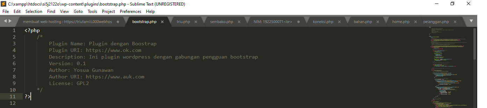
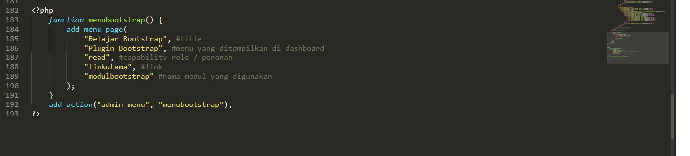
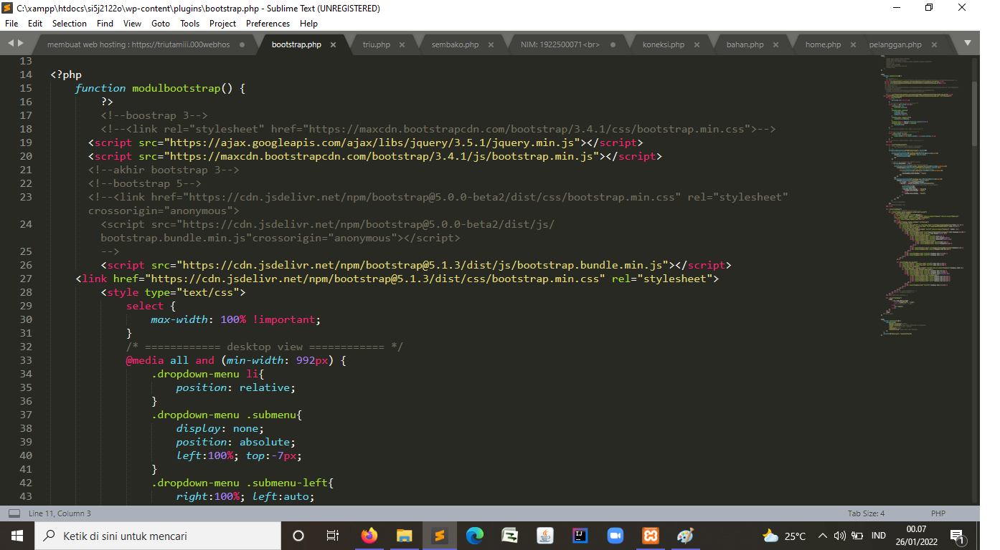

NIM: 1922500071
Nama: Tri Utami
Kelompok: SI5J
Hasil atau kesimpulan dari pertemuan 11 adalah:
- pertama yang harus dilakukan adalah mendownload file jilbab.php yang sudah anda kirim ke gc lalu taruh di folder yang akan kita gunakan, taruh di htdocs -> wp-content -> plugins.
Jika instruksi pertama sudah dilakukan login ke akun localhost yang akan kita gunakan.
Kemudian duplikat file hijab.php lalu copy-paste di folder tersebut. Jika hasil duplikat sudah di rename menjadi bootstrap.php maka buka file tersebut melalui Sublime Text.
- Ubah nama sebelumnya menjadi seperti ini gambar dibawah;
- Lalu Ubah menu sebelum nya menjadi seperti gambar dibawah:
- kalau sudah selesai silahkan cari di https://www.w3schools.com/ untuk pendukung bootstrap nya.
yang pertama kita masukan copy codingan bootstrap untuk tampilan layar, lalu pastekan ke sublime text
- Lalu hasil nya akan seperti gamabr dibawah
gambar:


